In dem Register "Zusatz" können zusätzliche Einstellungen zur Stückliste getroffen werden.
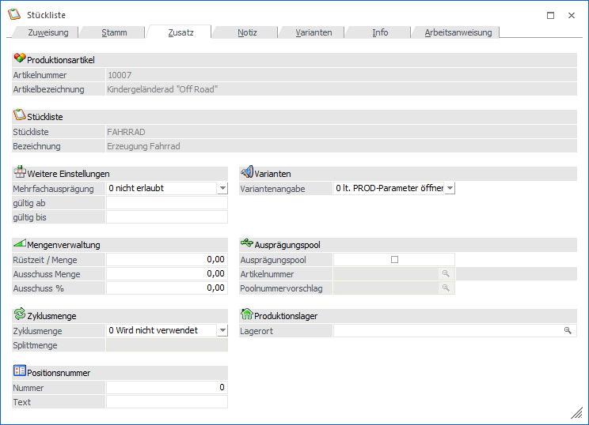
Folgende Eingabefelder, Einstellungen und Information stehen zur Verfügung:
Produktionsartikel

Ø Artikelnummer
An dieser Stelle wird die Artikelnummer des ausgewählten Produktionsartikels angezeigt.
Ø Bezeichnung
Hier wird die Bezeichnung des aktuell gewählten Produktionsartikels dargestellt.
Stückliste

Ø Stückliste
An dieser Stelle wird die Nummer der ausgewählten Stückliste angezeigt.
Ø Bezeichnung
Hier wird die Bezeichnung der aktuell gewählten Stückliste dargestellt.
Weitere Einstellungen
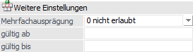
Ø Mehrfachausprägung
Grundsätzlich können im Produktionsprozess Standardartikel, Identnummern Artikel und Chargenartikel erzeugt werden. Durch diese Einstellung kann bestimmt werden, ob im Ausprägungsfenster die aufzuteilende Menge auf mehrere oder nur auf eine Ausprägung verteilt werden kann. Hierfür stehen folgende Optionen zur Auswahl:
ü 0 - nicht erlaubt
Bei
"Hauptartikeln mit Ausprägungen" (Produktionsartikel und Komponenten) kann die
Menge im Produktionslauf jeweils nur auf eine Ausprägung verteilt werden.
ü 1 - erlaubt
Bei "Hauptartikeln
mit Ausprägungen" (Produktionsartikel und Komponenten) kann die Menge im
Produktionslauf jeweils auf mehrere Ausprägungen verteilt werden.
ü 2 - lt. Artikelstamm-Einstellung
(Produktionsartikel)
Ob die Menge im Produktionslauf jeweils nur auf eine
oder auf mehrere Ausprägungen verteilt werden kann ist abhängig von der
Artikelstamm-Einstellung des Produktionsartikels (Artikelstamm - Register
"Stamm" - Unterregister "Erweitert" - Option "Mehrfachausprägung"). Die dort
gewählte Auswahl gilt in der WinLine PPS wiederum für den Produktionsartikel
selber, sowie für dessen Komponenten.
Achtung
Bei Produktionsartikeln mit Identnummer muss diese Einstellung immer aktiviert werden!
Ø gültig ab / gültig bis
Mit dieser Datumseingabe kann festgelegt werden, in welchem Zeitraum die Stückliste gültig ist, wobei dieses Datum mit dem Produktionsdatum des Produktionsauftrags abgeglichen wird. Sobald die Gültigkeit nicht mehr gegeben ist, so kann mit der Stückliste kein PPS-Auftrag mehr angelegt werden.
Mengenverwaltung
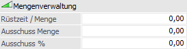
Ø Rüstzeit / Menge
Nach der hier hinterlegten Menge wird wieder die gesamte Rüstzeit der hinterlegten Tätigkeiten benötigt.
Beispiel
Nach jeder hundertsten Bohrung muss der Bohrer gewechselt werden und dieses dauert 5 Minuten. Im Feld "Rüstzeit/Menge" ist 100 einzutragen. Die Rüstzeit von 5 Minuten ist in der entsprechenden Tätigkeit im Feld "Rüstzeit" zu hinterlegen.
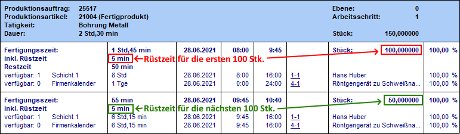
Achtung
Die Option "Rüstzeit/Menge" funktioniert nicht, wenn innerhalb der verwendeten Tätigkeiten mit der Einstellung "Zyklusmenge" gearbeitet wird.
Ø Ausschuss Menge
An dieser Stelle wird der Ausschuss in Form einer festen Menge hinterlegt. Durch die Hinterlegung einer "Ausschuss Menge" wird die Menge aller benötigten Komponenten (alle Zeilen mit Typ "0 - Artikel" in der Stücklistentabelle) um den hier hinterlegten Wert erhöht.
Beispiel
Für 1 Stk. des Produktionsartikels "Metallfuß" wird laut Stücklistentabelle 1 Blech benötigt, welches bei der Produktion gestanzt werden muss. Bevor der eigentliche Produktionslauf des Metallfußes beginnen kann, muss allerdings die ebenfalls benötigte Stanze eingestellt werde. Um die Einstellungen zu testen werden immer 2 Bleche benötigt.
Bei einem Produktionsauftrag über 100 Metallfüße wird der Bedarf (Höhe der reservierten Menge) an Blech wie folgt gerechnet:
Legende: P = Produktionsmenge => 100 Stk.
K = Komponentenmenge lt. Stücklistentabelle => 1,00 (pro Metallfuß wird 1,00 Blech benötigt)
A = Ausschuss Menge => 2,00
B = Mengenbedarf der Komponente => ?
Berechnung: (K x P) + A = B
(100 x 1,00) + 2,00 = 102,00 Stk.
Ø Ausschuss %
An dieser Stelle wird der im Normalfall übliche Ausschuss in Prozent hinterlegt. Ist für eine Stückliste ein Ausschuss eingegeben, wird die zu produzierende Menge automatisch um den Ausschuss erhöht, damit die im Projekt ursprünglich gewünschte Menge erreicht wird.
Beispiel
Es wird ein Produktionsauftrag über 100 Stk. des Produktionsartikels "Metallfuß" erstellt. Pro Metallfuß wird 1 Blech benötigt. Der Ausschuss wurde im Register "Zusatz" unter "Ausschuss %" mit 10% hinterlegt.
Der Bedarf (Höhe der reservierten Menge) der Komponenten wird wie folgt gerechnet:
Legende: P = Produktionsmenge => 100 Stk.
K = Komponentenmenge lt. Stücklistentabelle => 1,00 (pro Metallfuß wird 1,00 Blech benötigt)
C = Ausschuss in % => 10% oder 0,10
B = Mengenbedarf der Komponente => ?
Berechnung: (K x P) + C = B
(100 x 1,00) x 1,10 = 110,00 Stk.
Sollte zusätzlich auch eine "Ausschuss Menge" hinterlegt sein, dann erfolgt die Berechnung wie folgt:
Legende: P = Produktionsmenge => 100 Stk.
K = Komponentenmenge lt. Stücklistentabelle => 1,00 (pro Metallfuß wird 1,00 Blech benötigt)
A = Ausschuss Menge => 2,00
C = Ausschuss in % => 10%
B = Mengenbedarf der Komponente => ?
Berechnung: ((K x P) + A) + C = B
((100 x 1,00) + 2,00) x 1,10 = 112,20 Stk.
Hinweis
Die "Ausschuss %"-Hinterlegung, welche direkt in der Stücklistetabelle pro Komponente getätigt werden kann, hat Vorrang vor dem hier erfassten %-Wert.
Zyklusmenge
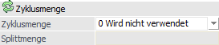
Ø Zyklusmenge
Bei Verwendung einer hier zu definierenden Zyklusvariante kann im nachfolgenden Feld "Splittmenge" die Menge, ab welcher der Arbeitsschritt (PPS-Auftrag) gesplittet werden soll, hinterlegt werden. Dabei kann zwischen zwei Arten des Splittens unterschieden werden, d.h. es kann definiert werden, wie die Berechnung vorgenommen werden soll.
Da auch in Tätigkeiten eine Zyklusmenge hinterlegt werden kann, wird bei Aktivierung der Checkbox die größte Zyklusmenge, der in der Stückliste hinterlegten Tätigkeiten, als Splittmenge vorgeschlagen.
ü 0 - wird nicht verwendet
Eine
Erfassung der Zyklusmenge ist nicht möglich.
ü 1 - Arbeitsschritt pro Zyklusmenge
splitten
Ist eine Zyklusmenge hinterlegt, so wird automatisch nach der
Zyklusmenge der Auftrag gesplittet und mit der gleichen Nummer nochmals
angelegt.
ü 2 - Arbeitsschritt pro Zyklusmenge
splitten / Menge aufteilen
Die Splittungen / Splittmenge orientieren sich
nicht nur an der Splittmenge, sondern auch an der Herstellungsmenge. D.h. es
wird die Produktionsmenge durch die Zyklusmenge dividiert. Die Berechnung wird
wie folgt vorgenommen:
X = Produktionsmenge
Y = Maximale
Splittmenge
X / Y = Z
Z wird aufgerundet
X / Z = neue
Splittmenge
Beispiel 1
Die Produktionsmenge sind 750
und die Zyklusmenge sind 300, daraus ergibt sich die folgende Berechnung der
neuen Splittmenge:
750/300 = 2,5
2,5 -> 3
750/3 = 250
In
dem Fall kommt es zu der Splittung auf 3 Einheiten mit jeweils 250.
Beispiel 2
Die Produktionsmenge sind 749
und die Zyklusmenge sind 300. Daraus ergibt sich folgende Berechnung der neuen
Splittmenge:
749/300 ~ 2,5
2,5 -> 3
750/3 = 250
Die
Aufteilung erfolgt solange die Menge 250 erreicht wird und die restliche Menge
wird auf die letzte Splittmenge verteilt. Die Aufteilung würde in dem Beispiel
bei 3 bleiben. Die ersten beiden würden mit 250 Einheiten gesplittet und die
dritte Splittmenge bekommt die übrigen 249.
Hinweis
Wenn die Option "Zyklusmenge" verwendet wird und die Option 1 oder 2 selektiert wurde, dann muss im Feld "Splittmenge" ein Wert größer 0,00 hinterlegt werden. Ansonsten kann die Stückliste nicht gespeichert werden.
Worin liegt der Unterschied zwischen der Zyklusmenge in der Tätigkeit und in der Stückliste?
Im Fall der Zyklusmenge in der Tätigkeit wird die Fertigungszeit der Tätigkeit je nach Zyklusmenge erhöht.
Beispiel - Zyklusmenge in der Tätigkeit
Rüstzeit: 10 min.
Fertigungszeit: 3 min.
Zyklusmenge aktiviert: 5 Stk.
In einem Fertigungsvorgang (13 min.) können max. 5 Stk. produziert werden. Wird die Zyklusmenge überschritten, dann fällt wieder die Fertigungszeit (3 min.) an.
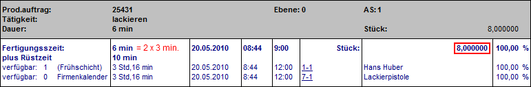
Im Fall der Zyklusmenge in der Stückliste wird der Arbeitsschritt mit seinen Sub-Ebenen gesplittet:
Beispiel - Zyklusmenge in der Stückliste
Stückliste bestehend aus der Tätigkeit "lackieren"
Rüstzeit: 10 min.
Fertigungszeit: 3 min.
Zyklusmenge in der Tätigkeit deaktiviert
Zyklusmenge in der Stückliste aktiviert und Splittmenge auf 5 Stk. eingestellt
Produktionsmenge: 8 Stk.
Wenn ein Produktionsauftrag erstellt wird, dann wird automatisch nach 5 produzierten Einheiten der Auftrag gesplittet und mit der gleichen Nummer nochmals angelegt. Die Arbeitsschritte werden dabei chronologisch hochgezählt.
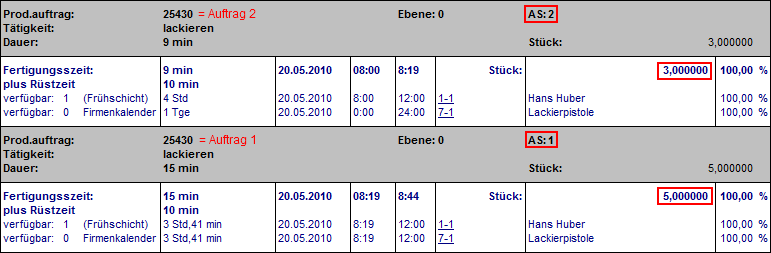
Sollte in beiden Bereichen (Stückliste und Tätigkeit) eine Zyklusmenge hinterlegt sein, dann wird zuerst die Zyklusmenge der Stückliste geprüft und ggfs. der Produktionsauftrag gesplittet (im Beispiel rot markiert). Anschließend wird pro gesplitteten Produktionsauftrag die Zyklusmenge der Tätigkeit berücksichtigt und die Fertigungszeit entsprechend berechnet (im Beispiel grün markiert).
Beispiel - Zyklusmenge in der Stückliste und der Tätigkeit
Stückliste bestehend aus der Tätigkeit "lackieren"
Rüstzeit: 10 min.
Fertigungszeit: 3 min.
Zyklusmenge in der Tätigkeit: 3 Stk.
Zyklusmenge in der Stückliste aktiviert und Splittmenge auf 5 Stk. eingestellt
Produktionsmenge: 13 Stk.
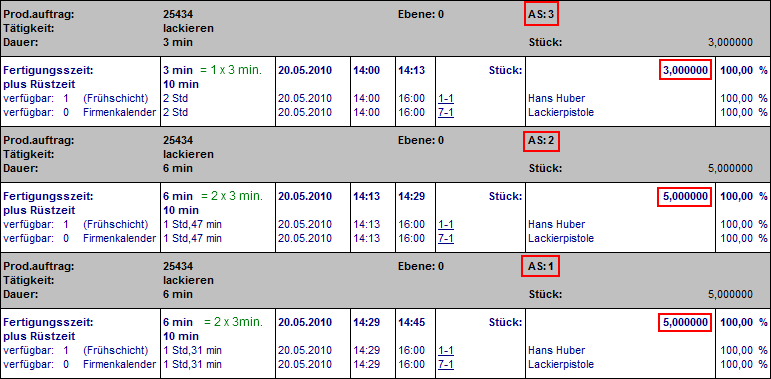
Ø Splittmenge
Hier kann eingestellt werden, ab welcher Menge ein Produktionsauftrag gesplittet werden soll (nähere Informationen siehe Feld "Zyklusmenge").
Hinweis
Wenn die Option "Zyklusmenge" aktiviert ist, dann muss im Feld "Splittmenge" ein Wert größer 0,00 hinterlegt werden. Ansonsten kann die Stückliste nicht gespeichert werden.
Positionsnummer
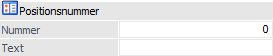
Ø Nummer / Text
Die hier hinterlegte Positionsnummer bzw. der Positionstext können in diversen Auswertungen (u.a. Materialentnahmeschein, Arbeitsschein und Arbeitsanweisung) als Sortierkriterium genutzt werden:
Varianten
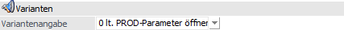
Ø Varianten
An dieser Stelle kann hinterlegt werden, ob die Auswahl einer Variante für die Stückliste bei der Produktionsvorbereitung, beim Produktionsauftrag einlesen oder bei der Anlage eines Produktionsauftrages über die Belegerfassung von WinLine FAKT zwingend erforderlich ist oder nicht bzw. ob die entsprechende globale Einstellung aus den PPS-Parametern dafür herangezogen werden soll.
ü 0 - lt. PPS-Parameter öffnen
Es
wird die Einstellung aus den PPS-Parametern (Feld "Varianten" im Bereich
"Produktionsauftragsanlage") herangezogen.
ü 1 - nicht zwingend
erforderlich
Die Auswahl einer Variante ist nicht zwingend erforderlich.
Diese Hinterlegung übersteuert die Einstellung aus den PPS-Parametern.
ü 2 - muss eingegeben werden
Die
Auswahl einer Variante ist zwingend erforderlich. Diese Hinterlegung übersteuert
die Einstellung aus PPS-Parametern.
Ausprägungspool
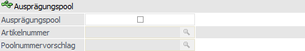
Ø Ausprägungspool
Mit dieser Einstellung wird gesteuert, ob mit sogenannten Ausprägungspools gearbeitet werden soll. Wie sich die Poolnummer bildet wird über die Felder "Artikelnummer" bzw. "Poolnummervorschlag" gesteuert.
Hinweis
Über Ausprägungspools kann eine eindeutige Verbindung zwischen einem zu produzierenden Ident- (Artikel mit einer Seriennummer) bzw. Chargenartikel und den benötigten Stücklistenkomponenten, welche ebenfalls mit einer Ident- oder Chargennummer geführt werden, geschaffen werden. (nähere Informationen siehe Kapitel "Ausprägungspool").
Ø Artikelnummer
An dieser Stelle kann die Artikelnummer eines Ident- bzw. Chargenartikels hinterlegt werden. Dieses ist in der Regel die Nummer des zu produzierenden Artikels.
Für die Erzeugung der Poolnummer wird die letzte Ident- bzw. Chargennummer des hinterlegten Artikels genommen und um die benötigte Anzahl von Pools hochgezählt. Somit sollte die Ausprägungspoolnummer der am Ende erzeugten Ident- bzw. Chargennummer entsprechen.
Hinweis
Damit die Poolnummer gebildet werden kann muss bei dem hinterlegten Ident- bzw. Chargenartikel bereits eine Ident- bzw. Chargennummer vorhanden sein!
Ø Poolnummernvorschlag
An dieser Stelle kann eine frei zu definierende alphanumerische Hinterlegung getroffen werden.
Für die Erzeugung der Poolnummer wird dieser Eintrag genommen und um die benötigte Anzahl von Pools hochgezählt.
Hinweis
Der hinterlegte Poolvorschlag bleibt immer die Ausgangsbasis für die Erzeugung der Poolnummern und wird an dieser Stelle nicht hochgezählt. D.h. wurde die Hinterlegung "POOL-00000" getroffen, dann wäre die erste Poolnummer für alle weiteren Produktionsaufträge immer die "POOL-00001".
Produktionslager
Ø Lagerort
Der hier hinterlegte Lagerort gilt in der weiteren Folge als Lagerortvorgabe für den Produktionsartikel, d.h. dieser Ort wird u.a. in der Zuordnung automatisch verwendet. Der Lagerort muss dabei nicht der letzten Hierarchie-Ebene entsprechen.
Hinweis
Der Lagerort wird bei Auftragsanlage fix in den Produktionsauftrag übertragen. Anschließend findet kein weiterer Abgleich zwischen Stücklistenstamm und Auftrag statt. Natürlich kann die Lagerortvorgabe durch eine manuelle Lagerorterfassung jederzeit übersteuert werden!